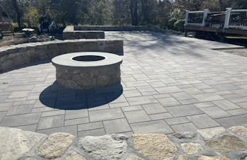
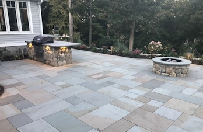
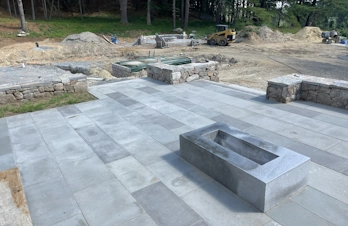
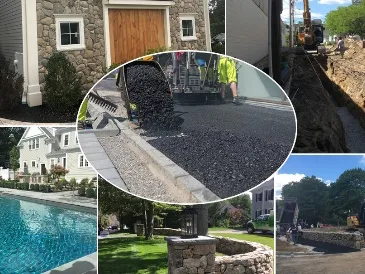

Professional Asphalt Paving Services in Massachusetts
At S. Phaneuf & Associates, we help homes and businesses look their best with smooth, durable, and beautifully maintained asphalt surfaces. From driveways and parking lots to streets and highways, our paving experts use top-quality materials and modern techniques to deliver lasting results.
Whether you need a Framingham asphalt paving contractor or services in Boston, Concord, or Marlborough, we’ve got you covered across Massachusetts.
Our Asphalt Paving & Maintenance Services
Asphalt Installation & Road Construction
We handle projects of all sizes — from pothole repairs and driveway paving to full-scale road construction. Every job includes professional ground preparation, surface treatment, and precision striping.
New Paving & Resurfacing
Enhance your property with durable, visually appealing pavement. Our team provides resurfacing and new asphalt installation for driveways, parking lots, patios, and walkways.
Asphalt Repair & Crack Sealing
Extend the life of your pavement with expert repair services. We fix cracks, potholes, and surface wear using durable materials designed to last through Massachusetts weather.
Sealcoating & Preventive Maintenance
Protect your investment with professional sealcoating. Our sealants shield your asphalt from UV rays, water, and traffic damage — keeping it smooth and attractive for years.
Additional Services
- Grading and base installation
- Drainage solutions and erosion prevention
- Layout and striping for parking lots
- Speed bump and handicap parking installation
- Petromax fabric installation and concrete bumpers
Why Choose Our Massachusetts Asphalt Company?
As a trusted asphalt paving company in Massachusetts, we specialize in delivering durable, high-quality driveways, parking lots, and walkways for residential and commercial clients. Our locally owned business takes pride in reliable service, precision workmanship, and lasting results you can depend on.
- Family-Owned & Operated: Your local paving expert dedicated to excellence and personalized service.
- Trusted Across Massachusetts: Proudly serving more than 20 towns throughout Norfolk, Middlesex, and Worcester counties.
- High-Quality Materials: We use premium asphalt mixtures and state-of-the-art paving equipment for long-lasting results.
- Customer-First Service: We return calls within 24 hours and stand behind every paving job with a satisfaction guarantee.
Everything You Need to Know About Asphalt Paving
Benefits of Asphalt Paving
- 100% Recyclable: Asphalt is the most recycled material in America—a claim widely supported by industry groups. Using recycled asphalt pavement (RAP) can make new pavement stronger.
- Durable & Long-Lasting: A well-installed and maintained asphalt surface typically lasts 15 to 20 years, with some lasting up to 30 years or more with regular sealcoating.
- Cost-Effective: Asphalt has a **lower initial installation cost** compared to concrete.
- Safety & Drainage: Its dark color helps **melt snow and ice** faster. **Porous asphalt** is a specialized mix that allows water to drain directly through, aiding stormwater management.
- Noise Reduction: Asphalt is often referred to as the "quiet" paving option, helping to absorb traffic noise.
Types of Asphalt
Asphalt mixes are customized, but they are generally classified by their temperature and composition:
| Type | Temperature / Composition | Primary Use |
|---|---|---|
| Hot Mix Asphalt (HMA) | Heated to 300°F–350°F. | The most common type, used for high-traffic roads, highways, and full pavement construction. |
| Warm Mix Asphalt (WMA) | Heated 30°F–70°F lower than HMA. | Uses less energy and is safer for workers. Often used to extend the paving season. |
| Cold Mix Asphalt | Used at ambient/cold temperatures. | Mainly used for **temporary pothole repairs** and patching when weather does not allow for HMA. |
| Porous Asphalt | Designed with voids/holes. | Allows rainwater to filter through to the ground, improving drainage and reducing runoff. |
The Paving Process (New Installation)
A typical professional asphalt installation follows these key stages:
- Demolition and Removal: The existing pavement (which can be recycled) and debris are removed to create a clean base.
- Grading and Sloping: The ground is shaped to ensure proper water flow **away** from the pavement, preventing future damage.
- Sub Base Prep & Proof Roll: A sturdy gravel or aggregate base is installed and compacted. A **Proof Roll** (testing the base with heavy equipment) is performed to ensure structural stability and identify soft spots.
- Binder Layer: A strong base layer made of large stone aggregate and asphalt cement is laid down to add structure.
- New Surface Layer: The final surface course, made of finer aggregates for a smoother finish, is applied over the binder layer.
- Final Roll and Compaction: Heavy rollers compress the entire surface to achieve maximum density and smoothness, which is critical for durability.
Common Repairs and Maintenance
- Sealcoating: A protective liquid applied every 3–5 years to guard the surface from UV rays, oil, fuel, and water penetration.
- Crack Filling: Hot, flexible sealant is used to quickly fill cracks, preventing water from reaching and damaging the underlying base.
- Milling: A cost-effective method where a machine **grinds off the damaged top layer** of asphalt, allowing a fresh surface to be applied without disturbing the base.
- Patching & Overlay: Filling in potholes (patching) or applying a new layer of asphalt over a slightly damaged existing surface (overlay).
Frequently Asked Questions
How much does it cost to pave a driveway in MA?
On average, a new asphalt driveway installation costs between $5 and $12 per square foot, depending on factors like depth, necessary site excavation, and your specific location.
Is asphalt cheaper than concrete?
Yes, asphalt is typically cheaper to install upfront. Asphalt costs an average of $5–$12 per square foot, while basic concrete ranges from $6–$15 per square foot and decorative concrete is even higher.
How long does asphalt last?
With proper maintenance and sealcoating, asphalt can last 20–30 years or longer.
Is blacktop the same as asphalt?
Yes — both terms are generally used interchangeably by contractors and the public to refer to the same durable mix of aggregate and asphalt cement.
Service Areas in Massachusetts
We proudly serve residential, commercial, and municipal clients across Massachusetts with dependable asphalt paving and maintenance services.
Get Your Free Consultation for Asphalt Paving, Masonry, or Excavation Services
Ready to transform your property? Fill out the form below, and one of our experts will reach out to you shortly. Providing detailed information will help us tailor our services to your exact needs.
-

Holliston, MACommercial project, made for entertaining. -

Concord, MAClassic wood burning, residential project. -

Concord, MASquare gas fire pit, residential project.
Request Free Consultation
S. Phaneuf & Associates is a fully licensed and insured company. We are in excellent standing with our customers. Our goal is to determine and implement the right solutions for each customer. We strive to provide fast and friendly services with the highest level of quality and customer satisfaction available.
Call Today
978-669-4919